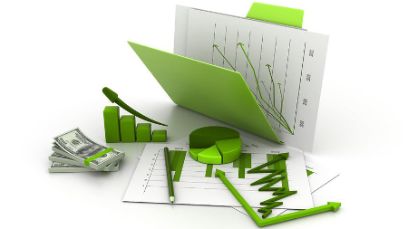

📑⚙️💻 Suivi des Factures Automatisé sur Excel 📊✅
Ce projet Excel est conçu pour offrir une gestion complète et automatisée des factures et des paiements, adaptée aux besoins des entreprises souhaitant optimiser leur suivi financier sans recourir à des logiciels coûteux.
🔧 Fonctionnalités principales :
• Centralisation des données :
Toutes les informations relatives aux clients, aux articles et aux factures sont regroupées dans des tables dédiées, facilitant ainsi la gestion et l'analyse des données.
• Génération automatique des factures :
À partir des données saisies, le modèle permet de générer des factures personnalisées, prêtes à être envoyées aux clients.
• Suivi des paiements :
Un tableau de bord interactif affiche l'état des paiements (payé, en retard, partiellement payé), offrant une vue d'ensemble claire de la situation financière.
• Alertes de relance :
Des indicateurs visuels signalent les factures impayées ou en retard, facilitant ainsi la gestion des relances.
• Analyse financière :
Des graphiques et des tableaux croisés dynamiques permettent d'analyser les tendances de paiement, les retards et les performances par client ou par période.
📅💹📊 Plan Financier Prévisionnel sur Excel 💻💰

Ce projet Excel est conçu pour offrir une vision claire et structurée des besoins financiers d'un projet entrepreneurial sur une période de 5 ans. Il permet d'anticiper les investissements nécessaires, d'évaluer la rentabilité et de planifier les financements, facilitant ainsi la prise de décision stratégique.
🔧 Fonctionnalités principales :
• Investissements initiaux détaillés :
liste complète des frais d'établissement, matériels, équipements et aménagements nécessaires au démarrage de l'activité, avec des informations sur les quantités, les prix unitaires et les durées d'amortissement.
• Tableaux de financement :
présentation des sources de financement envisagées (apports personnels, emprunts, subventions, etc.) et de leur répartition sur la période prévisionnelle.
• Prévisions de charges :
estimation des charges fixes et variables sur 5 ans, incluant les salaires, les loyers, les charges sociales, les amortissements, etc.
• Chiffre d'affaires prévisionnel :
projections des ventes mensuelles et annuelles, basées sur des hypothèses réalistes et des études de marché.
• Analyse de rentabilité :
calcul du seuil de rentabilité, des marges bénéficiaires et des indicateurs clés de performance pour évaluer la viabilité du projet.
• Suivi visuel :
graphiques interactifs permettant de visualiser l'évolution des principaux indicateurs financiers au fil du temps.
💼📊📈 Gestion de Portefeuille sur Excel 💻💰
Ce projet Excel offre une solution complète pour la gestion passive d'un portefeuille d'actions marocaines,permettant aux investisseurs de suivre et d'analyser l'évolution de leurs investissements sur le marché boursier marocain.
🔧 Fonctionnalités principales :
• Suivi des valeurs boursières :
enregistrement quotidien des cours de clôture des actions de sociétés cotées à la Bourse de Casablanca, telles que Attijariwafa Bank, BCP, BMCI, CDM, CIH, et l'indice MASI.
• Calcul de la performance du portefeuille :
évaluation de la rentabilité globale du portefeuille en fonction des variations des cours des actions détenues.
• Analyse de la diversification :
identification de la répartition sectorielle et pondération des actions dans le portefeuille pour assurer une diversification adéquate.
• Suivi des dividendes :
enregistrement des dividendes perçus par action et calcul du rendement en dividendes du portefeuille.
• Visualisation graphique :
représentation graphique de l'évolution de la valeur du portefeuille et de la performance des différentes actions au fil du temps.
📅📊📈 Diagramme de Gantt sur Excel 💻📌

Ce projet Excel présente un diagramme de Gantt interactif, outil essentiel pour la gestion et le suivi de projets. Il offre une représentation visuelle claire du calendrier des différentes tâches, permettant une planification efficace et un contrôle optimal de l’avancement.
🔧 Fonctionnalités principales :
• Planification visuelle des tâches :
chaque tâche est affichée sur une échelle de temps, facilitant la compréhension de la chronologie et de la durée des activités.
• Suivi de l’avancement :
mise en évidence des tâches en cours, à commencer, terminées ou en retard grâce à des codes couleurs.
• Gestion des priorités :
identification claire des tâches critiques et de leur ordre d’exécution.
• Clarté et lisibilité :
un tableau simple et intuitif pour visualiser rapidement l’état d’avancement du projet.